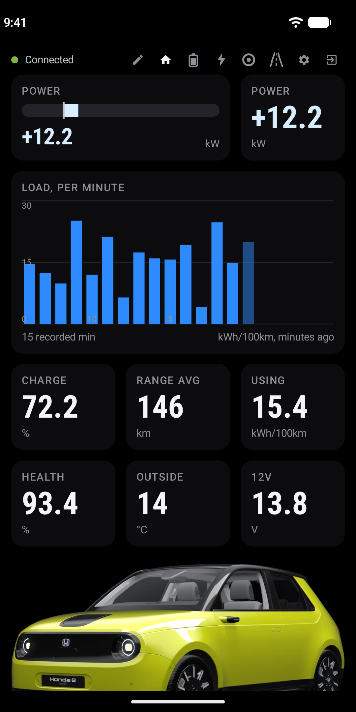
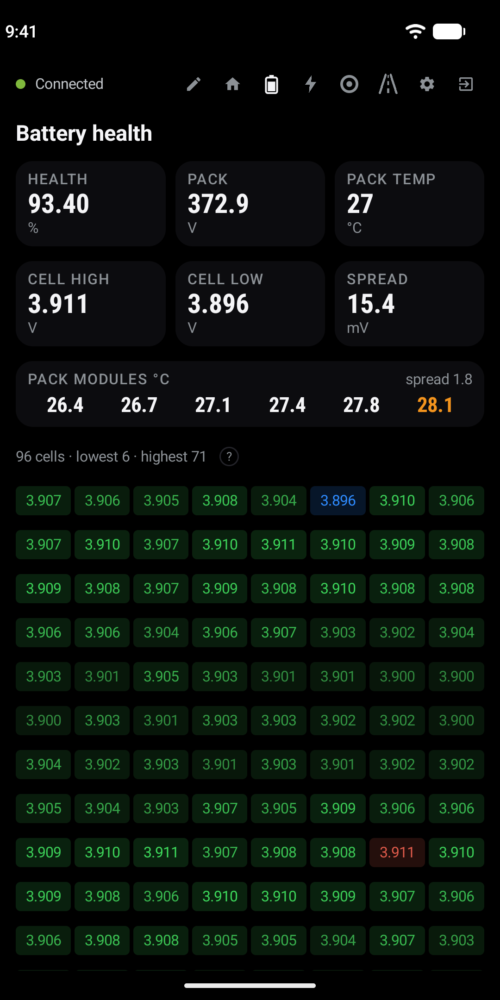
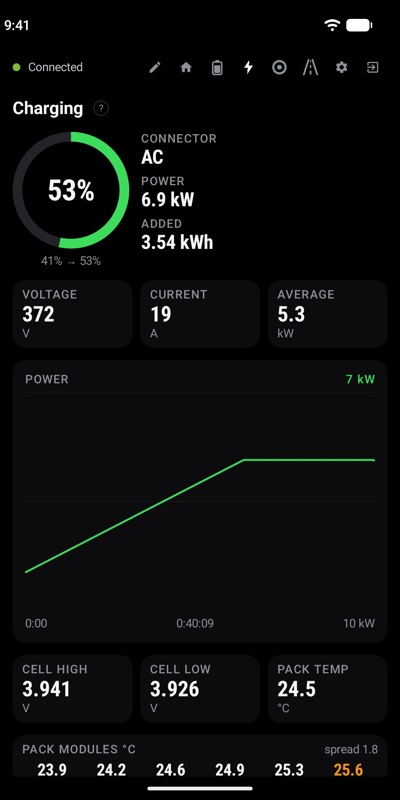
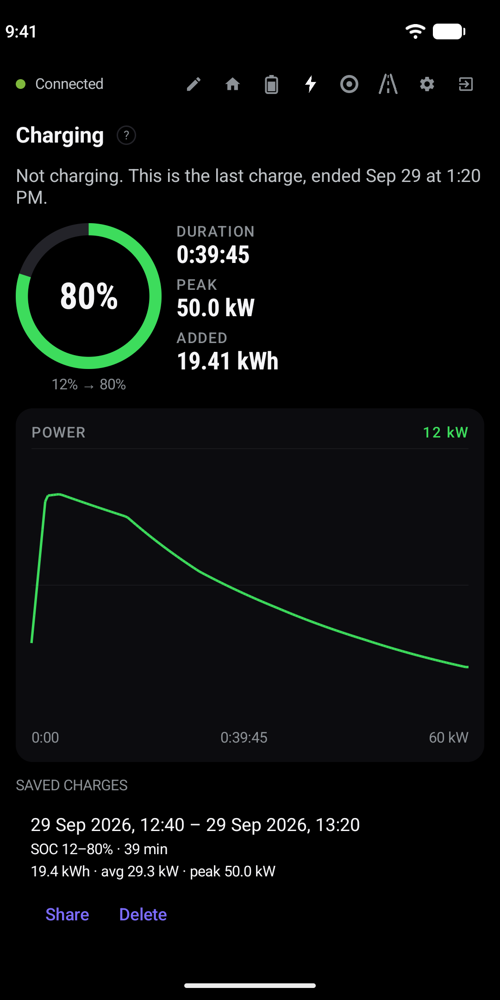
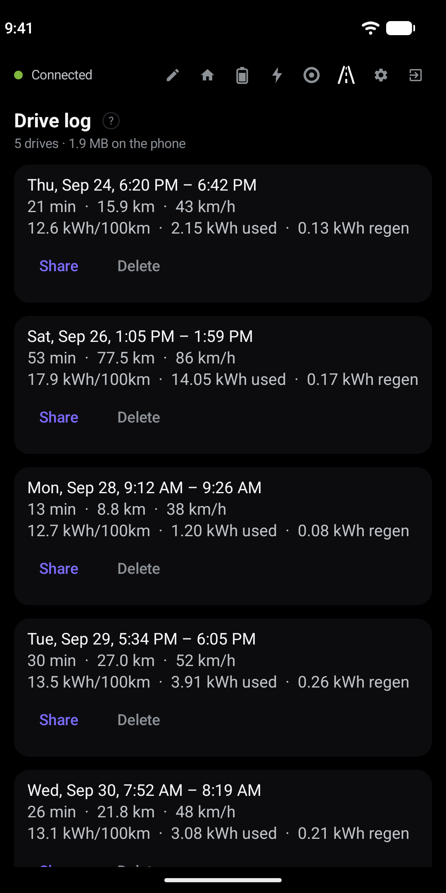

Everything the car knows, on one screen
Power with draw and regeneration, state of charge, state of health, pack voltage and current, temperatures, the 12 V battery, odometer and consumption.
Rearrange, add and remove tiles to build your own layout. The car is drawn in your paint colour,** and home-screen widgets and Android Auto show the key values too.

All 96 cells, at a glance
Every cell voltage on one page, with the weakest and strongest cells and the module temperatures.
A cell that starts drifting away from the rest is flagged early, long before it shows up as lost range.

Every charge, drawn like a charger draws it*
State of charge and power against time, energy added, peak and average power, live while you charge.
Each session is saved as a CSV file you can share or open anywhere else.

Every charge kept, even the ones the adapter slept through
The last charge stays on screen with its curve, duration, peak and energy, and every session is saved to share or delete.
Unplugged while the adapter was asleep? The next time you start the car, the app asks whether to finish that session with what your charger reported, or discard it. The missing part is drawn as an estimate.*

Drive logs you own
Every drive saved as a GPX file with speed, power and battery data, in a folder you choose. Replay them on a map with GPX Player.
Optional live telemetry to A Better Route Planner, with your own ABRP token, for route planning on the real state of your pack.